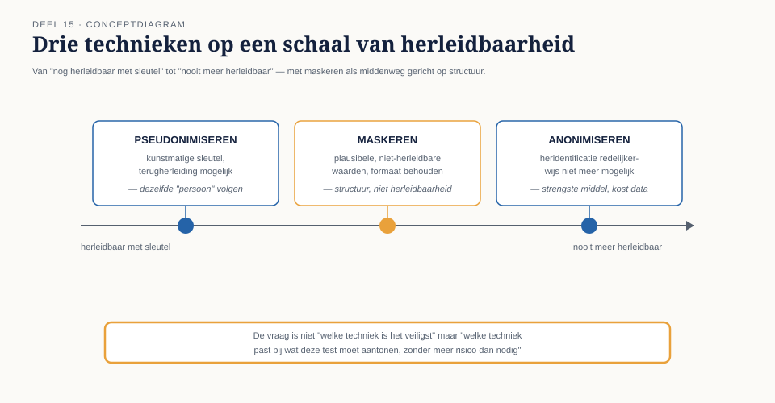

Waarom productiedata niet mag — en wat er dan wel moet
⏱ 18 minDagdeel ANa dit deel kunt u: uitleggen waarom productiedata in een testomgeving zowel een AVG-risico als een testrisico is; maskeren, anonimiseren en pseudonimiseren onderscheiden en het juiste middel bij het juiste doel kiezen; testdata als beheerd, geversioneerd product inrichten voor een programma met meerdere teams; een omgevingenlandschap ontwerpen dat meerdere teams en externe ketenpartners bedient; servicevirtualisatie inzetten op programmaschaal, inclusief het beheer van de aannames erachter; de spanning tussen realistische testdata en beheersbaarheid expliciet afwegen en verantwoorden.
Het dubbele risico
Niveau 1 introduceerde testdata als beheerd product en noemde kort de spanning tussen realisme en privacy. Op programmaschaal, met vijf teams die elk eigen testomgevingen beheren en een externe partij (Vestara) die meetest, wordt dit risico vermenigvuldigd: elke extra kopie van iets dat op productiedata lijkt, is een extra plek waar een datalek kan ontstaan.
Het tweede risico is subtieler: productiedata "toevallig" gebruiken geeft een schijnzekerheid. Een dataset van vandaag test het systeem tegen de situatie van vandaag — niet tegen de randgevallen die morgen kunnen ontstaan (de apostrofnaam die nog niet in productie voorkomt, de deeltijdcombinatie die nog niet is aangevraagd). Systematisch geconstrueerde testdata (niveau 1) blijft daarom, ook op programmaschaal, superieur aan een kopie van de werkelijkheid.
Drie technieken, drie doeleinden
- Maskeren — waarden vervangen door plausibele, niet-herleidbare alternatieven, met behoud van formaat en statistische eigenschappen (een naam blijft een naam, een postcode blijft een geldige postcode). Geschikt wanneer realistische structuur nodig is maar individuele herleidbaarheid niet mag.
- Anonimiseren — gegevens zodanig bewerken dat heridentificatie van de betrokkene, ook in combinatie met andere bronnen, redelijkerwijs niet meer mogelijk is. Het strengste middel, met als kostenpost: soms verlies van precies de statistische eigenschappen die voor een test relevant waren.
- Pseudonimiseren — identificerende gegevens vervangen door een kunstmatige sleutel, met de mogelijkheid tot terugherleiding via een apart, beveiligd bestand. Handig wanneer een test dezelfde "persoon" moet kunnen volgen door meerdere stappen van de keten, zonder de echte identiteit bloot te leggen.

De vraag is niet "welke techniek is het veiligst" maar "welke techniek past bij wat deze test moet aantonen, zonder meer risico te nemen dan nodig".
Uit Werkboek deel 15, Opdracht 15.1